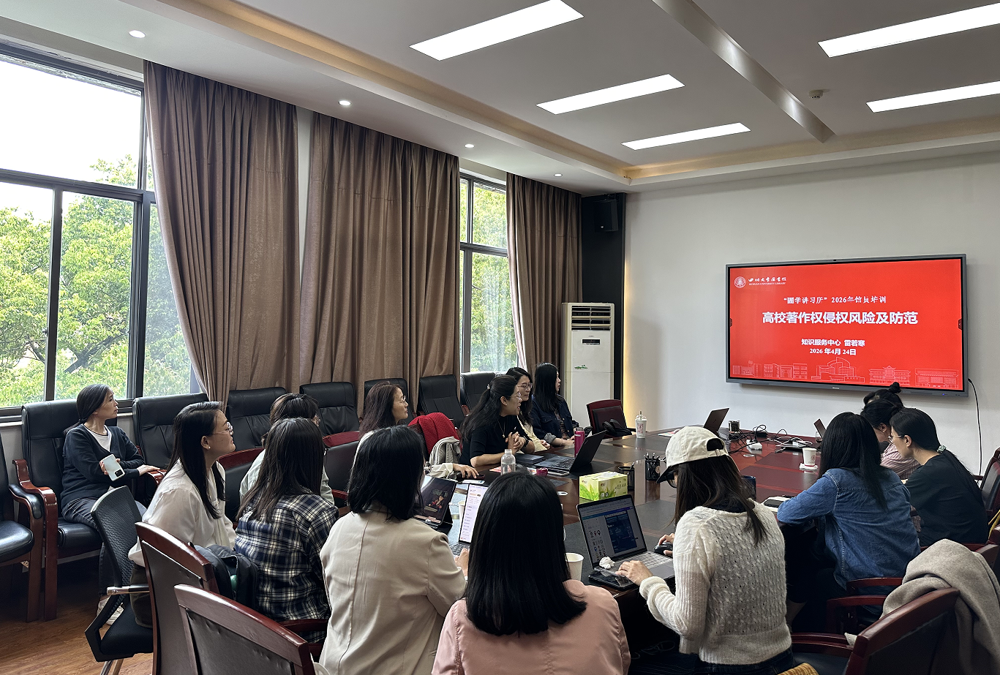

学院通知 · 科研创新
图书馆举办“高校著作权侵权风险及防范”专题讲座
发布时间：2026-04-28 11:46:46
为进一步提升馆员著作权风险防范意识和业务规范化水平，4月2 4日，作为四川大学知识产权宣传月及图书馆“圕学讲习所”能力提升营系列活动之一，“高校著作权侵权风险及防范”专题讲座在工学图书馆五楼会议室举行。讲座邀请图书馆知识服务中心雷若寒作专题分享，图书馆各中心（室）20余名馆员参加。图书馆党委副书记兼纪委书记、副馆长杜小军主持。 杜小军在主持时表示，著作权风险防范与科研论文写作、宣传推广、资源建设、读者服务等工作密切相关。馆员应增强版权意识，提升风险识别与规范处置能力，切实将学习成果转化为推动业务工作的实际成效。 讲座围绕著作权侵权判定、抗辩事由、侵权法律责任及图书馆业务中的风险防范、典型案例分析、工作启示与建议等内容展开。雷若寒结合相关法律法规、司法解释和典型案例，重点分析了视频制作、新媒体运营、学术写作、海报设计、图片使用与演绎、数据库采购公告及合同条款设计、古籍数字化服务等场景中的著作权风险，并提出针对性防范建议。 交流环节，参会馆员结合岗位实际，围绕图片合理使用、数据库采购合同权责约定、古籍数字化服务中的读者侵权风险等问题进行提问。雷若寒逐一回应，并与大家开展深入交流。 杜小军在总结中强调，馆员要在微信宣传稿撰写、论文写作、专著编写、数据库使用等工作中强化著作权合规意识，准确识别风险边界，规范使用各类资源，保障图书馆相关工作依法依规开展。 本次讲座内容紧扣图书馆工作实际，案例具有针对性，有助于提升馆员著作权法律意识和实务能力。下一步，图书馆将持续推进馆员业务能力培训，进一步提高服务保障水平和规范化工作水平。 供稿：知识服务中心 雷琴 马含思羽
